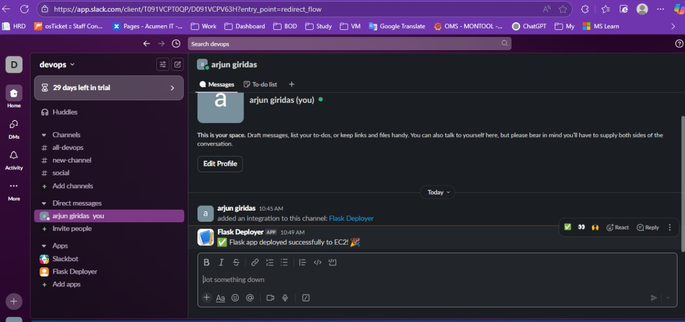
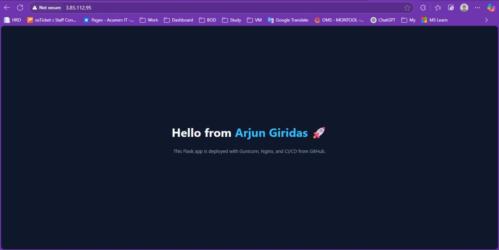
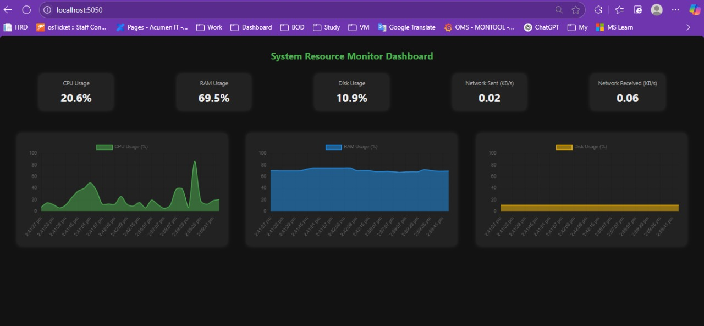
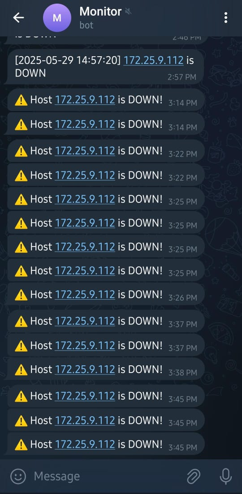

System Administrator | Aspiring DevOps Engineer
Building scalable, automated, and production-ready systems
System Administrator with hands-on experience in infrastructure, transitioning into DevOps with focus on automation, CI/CD, and cloud technologies.
Open to DevOps / Cloud Opportunities
Download ResumeSystem Administrator with strong Linux, networking, and infrastructure experience. Currently building DevOps skills through real-world projects including CI/CD, Docker, and monitoring systems.
CI/CD pipelines using GitHub Actions.
Docker-based deployments.
Prometheus & Grafana.
Scalable infrastructure.

Automated deployments using GitHub Actions.

Dockerized production app.

Prometheus & Grafana dashboards.

Python monitoring alerts.